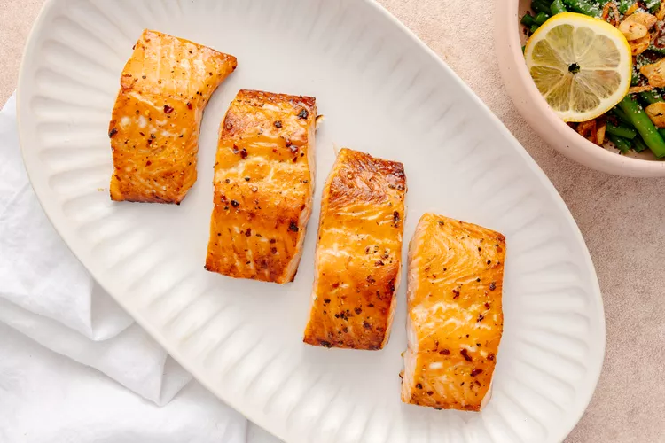

Salmon with brown sugar glaze

A little bit about Salmon
Salmon is one of the healtiest sources of protein, It is an excellent source of protein and healthy omega-3 fatty acids.
But it doesn't always taste the best! so today we're going to learn how to make it a more enjoyable meal!
The ingredients:
- 2 tablespoons light brown sugar, tightly packed
- 1 tablespoon Dijon mustard
- 1 teaspoon salt
- 1/4 teaspoon freshly ground black pepper
- 1/4 teaspoon crushed red pepper flakes
- 4 (8-ounce) skin-on salmon filets
Recipe instructions:
- Preheat the oven to 425°F.
Position a rack in the center, line a sheet pan with foil, and set it aside.
- Prepare the glaze:
In a small bowl, stir the brown sugar, mustard, honey, salt, black pepper, and red pepper flakes until smooth and drizzly.
- Dry and glaze the salmon:
If you like to eat the salmon skin, pat it very, very dry with a clean dish towel or paper towels. Skip this step if you prefer not to eat the skin.
Place the filets, skin side-down and with space between each filet, on the prepared sheet pan.
Spoon the glaze onto the filets, making sure it fully covers the tops. Use the back of the spoon to spread it out.
- Bake until the tops are golden brown and crispy in spots. The salmon will feel slightly firm when pressed with your fingers and it should flake easily with a fork, 12 to 14 minutes.
If your filets are thin (less than an inch thick), start checking for doneness at the 10-minute mark. A digital thermometer inserted into the thickest part of the salmon should register
between 125°F and 130°F—this is considered cooked medium.
- Use a spatula to transfer the salmon onto plates and serve warm.
Store leftovers in the fridge for up to 4 days. To reheat, place it on a foil-lined sheet pan and bake it slowly at 300°F until warmed through.
This low and slow method will prevent the salmon from drying out too much.
